Sistemul electric este format din:
- generatoare electrice instalate în centrale electrice
- reţea electrică
- receptoare electrice
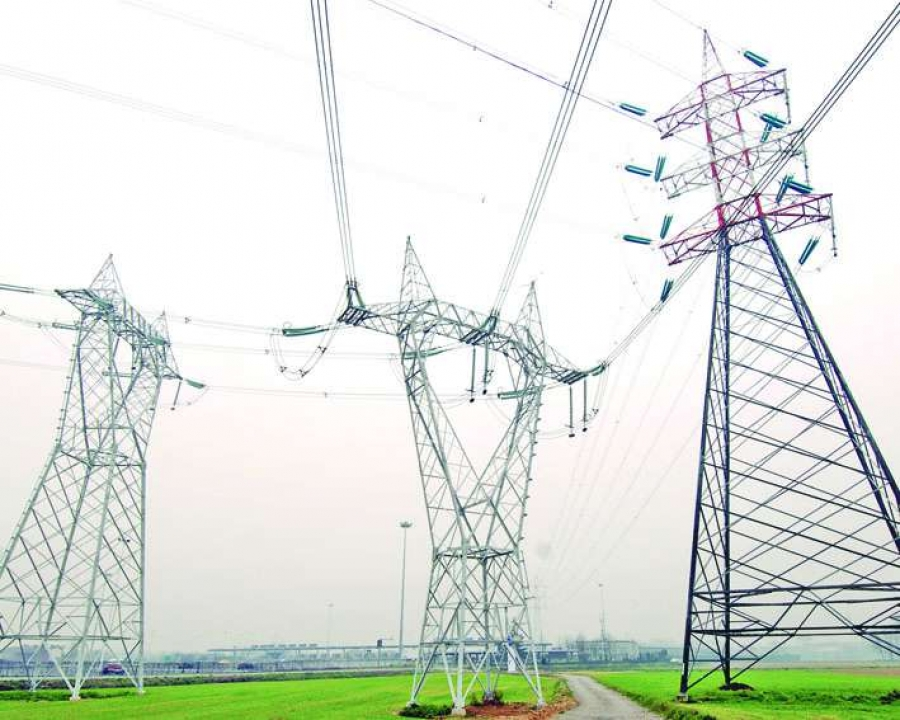
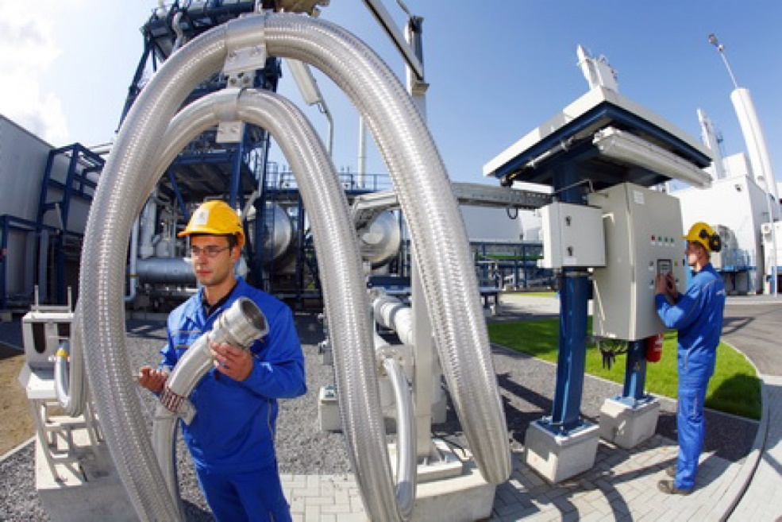
Rețeaua electrică
Staţii electrice de transformare

Staţii ridicătoare de tensiune
Transportul energiei electrice la distanțe mari se face la tensiuni mai mari pentru a evita pierderile de energie, iar acest lucru se face cu ajutorul transformatorului ridicător de tensiune care crește tensiunea la valori înalte 110KV-400KV, sau foarte înalte, peste 400 KV.Linii electrice
- de transport
- de înaltă tensiune
- de foarte înaltă tensiune
- de distribuţie
- de medie tensiune
- de joasă tensiune
Staţii coborâtoare de tensiune
Reduc tensiunea electrica a liniilor de transport la valori medii 6-35 KV corespunzătoare liniilor de distribuție. Ele alimentează uzinele sau posturile de transformare unde tensiunea este coborâtă la 380 V. 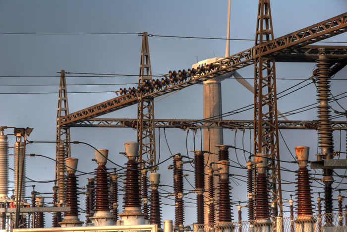Staţii electrice de conexiune
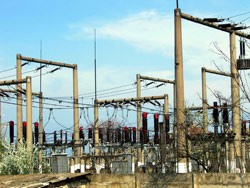Reţele de distribuţie
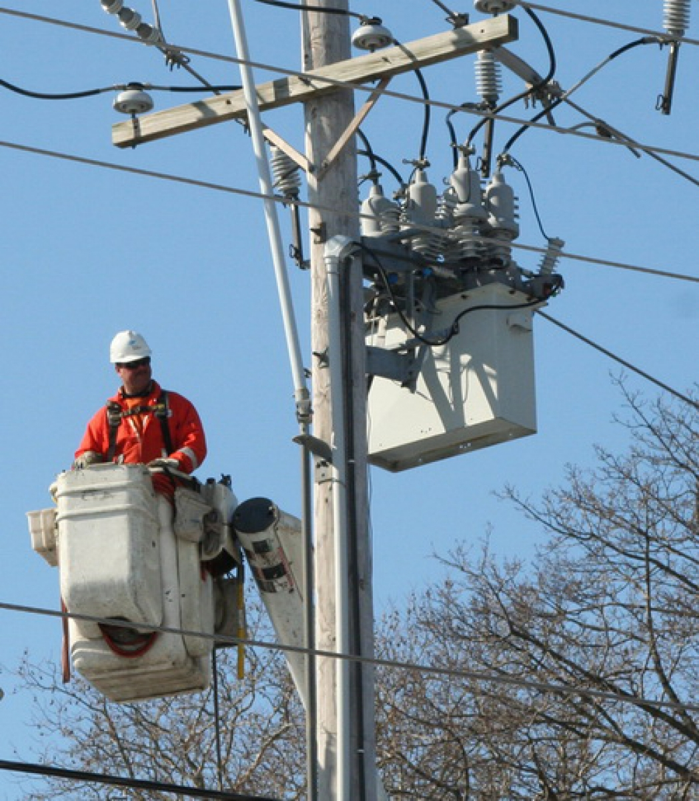Consumatori
Industriali
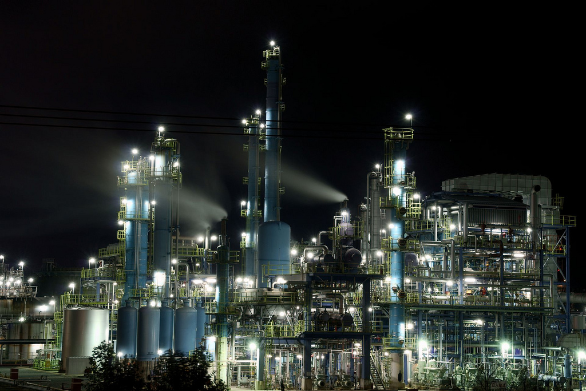
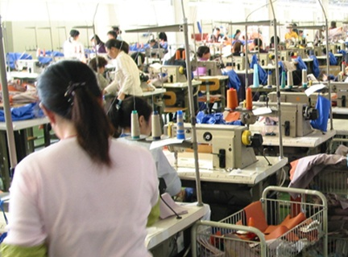
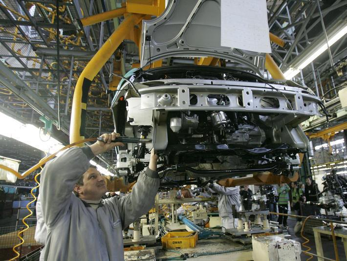
Casnici
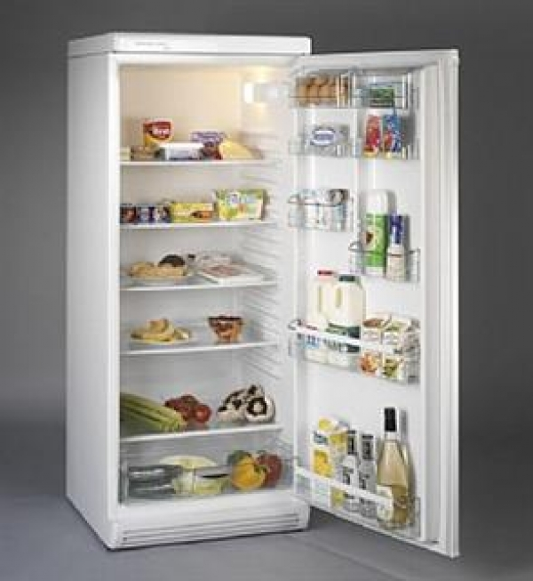
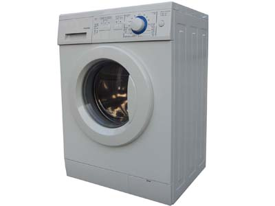
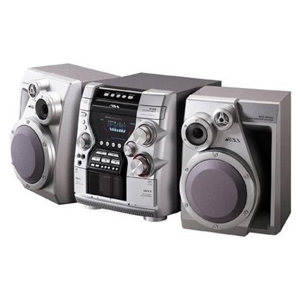
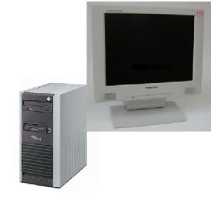